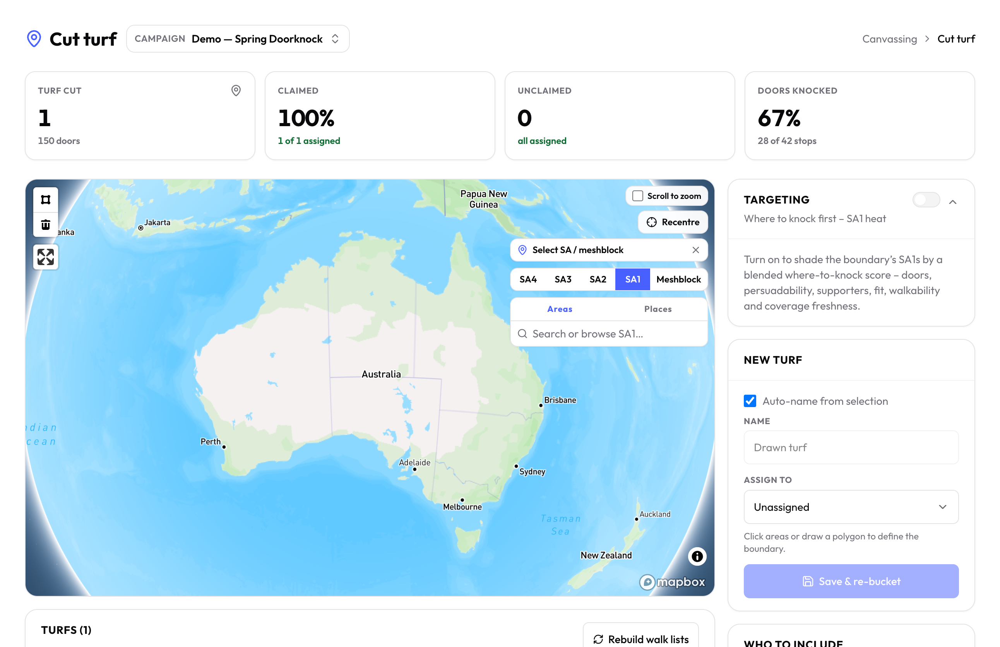
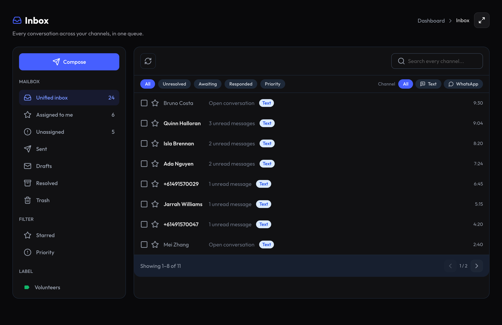
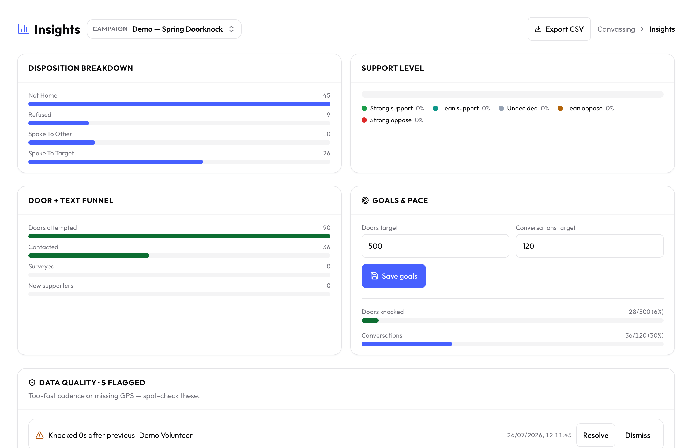
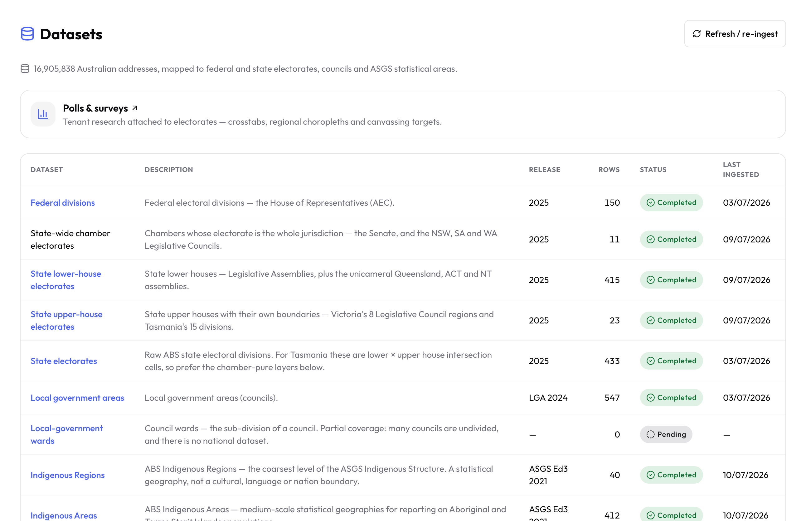

Cut the turf before anyone leaves the office.
Draw a boundary on the map, split it into walkable blocks by door count, and watch the address estimate update as you go.
Mapbox turf cutter
Live address counts
The all-in-one campaigning platform for progressive organisations – texting, calls, doorknocking, surveys, audiences and Australian data in one place.
Draw a boundary on the map, split it into walkable blocks by door count, and watch the address estimate update as you go.
Walk lists come route-optimised and land on the phone. The app queues knocks to an on-device outbox and flushes the moment signal comes back.
SMS and WhatsApp arrive in a shared inbox the whole team works, live over SSE, with claims so nobody doubles up on the same conversation.
Custom dispositions map to a five-point support scale, so a night of doorknocking becomes a targeting decision by the morning.
Every boundary set is already ingested – federal, state and local divisions, ASGS statistical areas, 16.9 million addresses – so the next round of turf is a better one.




From the first text to the last door knocked – five connected systems, one platform.
Draw a boundary, split it into walkable blocks, and send route-ordered lists to volunteers' phones with real walking metrics.
SMS and WhatsApp land in a shared queue your whole team works, with claims so nobody doubles up.
Map custom outcome codes to strong support through strong oppose, and fire canned replies on the first inbound.
A peer-to-peer SMS console with a live dual-channel preview, plus a WebRTC softphone that dials from the campaign's own number.
Roles, invitations and approvals, a calendar volunteers can read, and a one-tap broadcast to every phone in the field.
Each campaign gets an isolated portal at its own slug, with its own logo, colours and custom styling.
G-NAF addresses, ASGS geography, every federal, state and local division, politicians, policies and census demographics – in the workspace on day one, not a data project you have to run first.
Electoral, advocacy, community organising, union, GOTV, referendum – and more.
Cut turf, knock doors and text voters from the candidate's own number – with electorate data and polling built in.
Run P2P SMS and calls, capture support on a five-point scale, and sync every contact to Action Network.
Coordinate volunteers with shifts, a shared claimable inbox and a live action room that updates in real time.
Reach members by SMS and phone, survey them at the door or over text, and segment by workplace or region.
Optimised walk lists, an offline-first canvasser app and pace-vs-target goals to get the vote out on the day.
Map the electorate, canvass yes/no support with branching surveys, and track the contact funnel to polling day.
Invitations and roles, a calendar volunteers can read, shifts that stick, and a live action room with one-tap broadcast.
G-NAF addresses, ASGS geography, every electoral division and electorate polling on a choropleth – ready to turn into turf.
Custom dispositions on a five-point support scale, an honest results read, and turf that reshapes around what you learn.
Every channel, every door, every volunteer – run your whole campaign from one place.